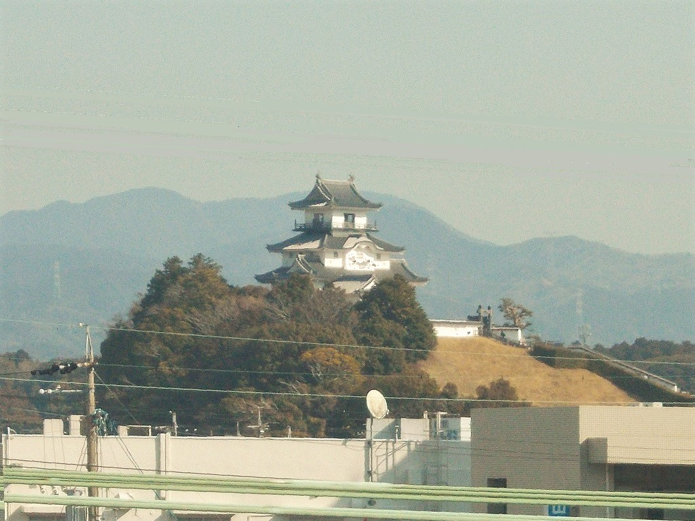
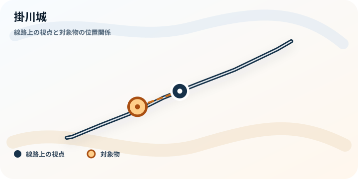
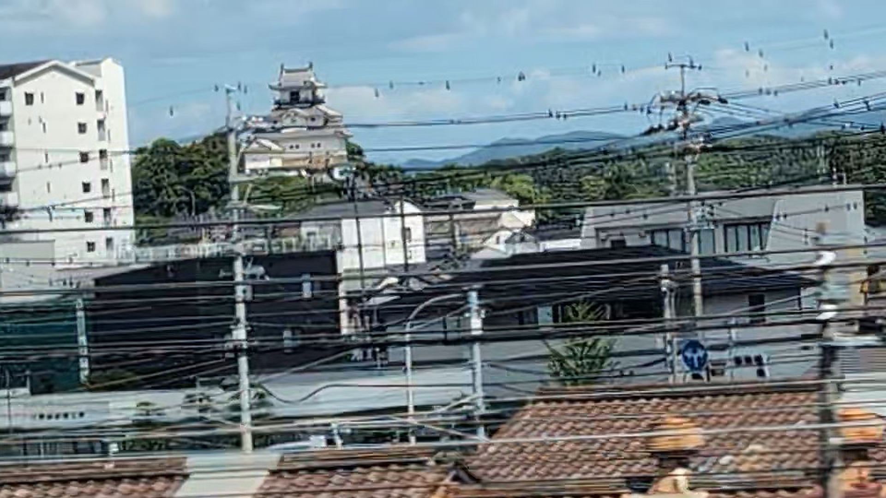

TOKAIDO SHINKANSEN WINDOW VIEW
掛川城はいつ見える？座席側は？
駅のすぐそばに、木造復元の天守。

- 見える区間
- 掛川駅 前後
- 座席側
- E席・山側
- タイミング
- 東京発のぞみ基準で約62分後
- 写真
- 2 枚
位置の目安
地図で見る
タイル地図ではなく、線路と対象物の位置関係だけを描いた軽量な静的地図です。 乗車中はライブ地図で見る
掛川城の見つけ方
掛川駅の北側、車窓から探せる距離に掛川城の天守があります。日本初の木造復元天守。見えるのは一瞬ですが、静岡の車窓に歴史の一行が足されます。
東京から新大阪方面へ向かう場合は、掛川駅 前後が近づいたらE席・山側の窓を少し早めに見てください。新大阪から東京方面へ向かう場合は、通過順が逆になります。
東海道新幹線の車窓としてのポイント
掛川城は、富士山だけではない東海道新幹線の車窓を楽しむための見どころです。列車の速度が速いため、見える時間は短く、天気や座席位置によって見え方が変わります。
写真で見る掛川城
